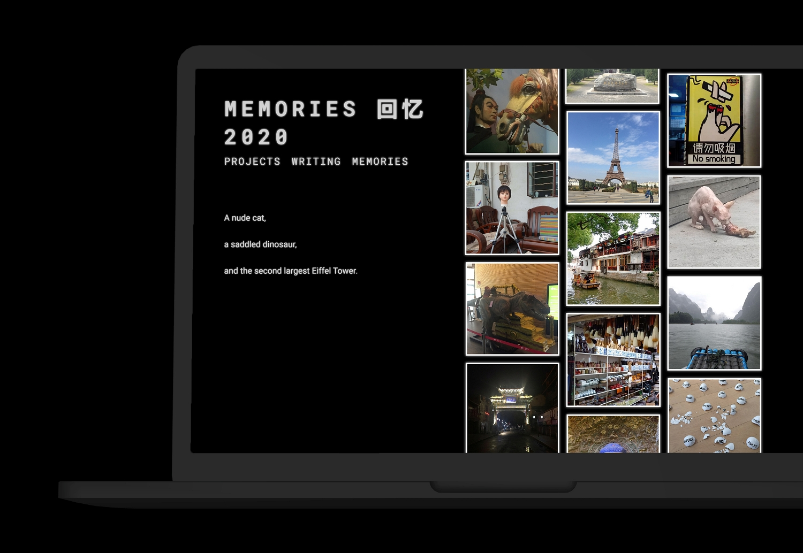

Hanghzou Archives
◼ An online archive of works and memories.
◼ 2022
Challenge
Hangzhou Archives is a website that comprises works and memories made during the two years I attended China Academy of Art. My goal was to code a responsive site from scratch as an exercise in front-end web development.

Research
I studied several other portfolio websites for UI inspiration. Navigation, layouts, fonts, color schemes, and other interactive elements were considered for their potential to be adapted to the content displayed in the archive.
Ideation
I mapped the basic site architecture before iterating different aesthetics in Figma. My goal was to provide a complimentary backdrop for the content being displayed. I chose a minimalist black and white aesthetic because of its synergy with some of the image assets.
Process
All pages were written in HTML5, CSS3, and ES6. I asked a few friends to test the site before it was published to ensure navigation was intuitive. The code and assets can be viewed at this link: https://github.com/d-u-b-s/hangzhou-archives
Result
A responsive website containing 10 projects, 1 thesis, and 160 memories. The site is viewable at: https://hangzhouarchives.xyz/

back to top